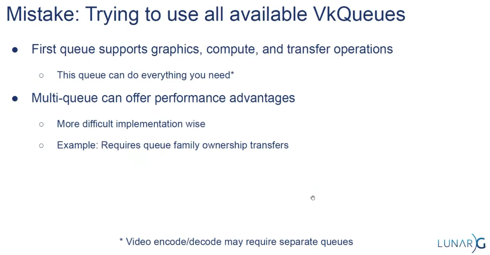

Instance / Extensions
Instance
-
VkInstance-
The Vulkan context, used to access drivers.
-
-
The instance is the connection between your application and the Vulkan library.
-
-
Optional, but it may provide some useful information to the driver to optimize our specific application.
-
-
-
Tells the Vulkan driver which global extensions and validation layers we want to use.
-
Instance Level Extensions
-
vkEnumerateInstanceExtensionProperties()-
Retrieve a list of supported extensions before creating an instance.
-
Each
VkExtensionPropertiesstruct contains the name and version of an extension.
-
Debugging
Validation Layers
-
Layers .
-
Vulkan is designed for high performance and low driver overhead, therefore, it will include very limited error checking and debugging capabilities by default.
-
The driver will often crash instead of returning an error code if you do something wrong, or worse, it will appear to work on your graphics card and completely fail on others.
-
Vulkan allows you to enable extensive checks through a feature known as validation layers .
-
Validation layers are pieces of code that can be inserted between the API and the graphics driver to do things like running extra checks on function parameters and tracking memory management problems.
-
The nice thing is that you can enable them during development and then completely disable them when releasing your application for zero overhead. Anyone can write their own validation layers, but the Vulkan SDK by LunarG provides a standard set of validation layers. You also need to register a callback function to receive debug messages from the layers.
-
Because Vulkan is so explicit about every operation and the validation layers are so extensive, it can actually be a lot easier to find out why your screen is black compared to OpenGL and Direct3D!
-
Common operations in validation layers are:
-
Checking the values of parameters against the specification to detect misuse
-
Tracking the creation and destruction of objects to find resource leaks
-
Checking thread safety by tracking the threads that calls originate from
-
Logging every call and its parameters to the standard output
-
Tracing Vulkan calls for profiling and replaying
-
-
There were formerly two different types of validation layers in Vulkan: instance and device specific.
-
The idea was that instance layers would only check calls related to global Vulkan objects like instances, and device-specific layers would only check calls related to a specific GPU.
-
Device-specific layers have now been deprecated , which means that instance validation layers apply to all Vulkan calls.
-
We don’t really need to check for the existence of this extension because it should be implied by the availability of the validation layers.
-
vkEnumerateInstanceLayerProperties -
RenderDoc :
-
Do not run validation at the same time as RenderDoc, otherwise you'll also be validating RenderDoc.
-
-
Vulkan Configurator :
-
Overwrites the normal Layer setup.
-
Implicitly loads layers.
-
How to use :
-
RIGHT-CLICK.
-
-
-
Performance :
-
Ensure validation layers and debug callbacks are off for performance runs. Use pipeline cache objects to avoid repeated pipeline creation cost.
-
I notice how each 'push', 'descriptor set bind', 'vertex bind', 'indices bind' and 'draw' were a lot slower with validations on.
-
Message Callback
-
The validation layers will print debug messages to the standard output by default, but we can also handle them ourselves by providing an explicit callback in our program.
-
This will also allow you to decide which kind of messages you would like to see.
-
messageSeverity -
messageType -
pfnUserCallback-
messageSeverity-
DEBUG_UTILS_MESSAGE_SEVERITY_VERBOSE_EXT-
Diagnostic message
-
-
DEBUG_UTILS_MESSAGE_SEVERITY_INFO_EXT-
Informational message like the creation of a resource
-
-
DEBUG_UTILS_MESSAGE_SEVERITY_WARNING_EXT-
Message about behavior that is not necessarily an error, but very likely a bug in your application
-
-
DEBUG_UTILS_MESSAGE_SEVERITY_ERROR_EXT-
Message about behavior that is invalid and may cause crashes.
-
-
-
messageType-
DEBUG_UTILS_MESSAGE_TYPE_GENERAL_EXT-
Some event has happened that is unrelated to the specification or performance
-
-
DEBUG_UTILS_MESSAGE_TYPE_VALIDATION_EXT-
Something has happened that violates the specification or indicates a possible mistake
-
-
DEBUG_UTILS_MESSAGE_TYPE_PERFORMANCE_EXT-
Potential non-optimal use of Vulkan
-
-
-
pCallbackData-
Refers to a
VkDebugUtilsMessengerCallbackDataEXTstruct containing the details of the message itself, with the most important members being: -
pMessage-
The debug message as a null-terminated string
-
-
pObjects-
Array of Vulkan object handles related to the message
-
-
objectCount-
Number of objects in the array
-
-
-
pUserData-
Contains a pointer specified during the setup of the callback and allows you to pass your own data to it.
-
-
Debug Utils (
VK_EXT_debug_utils
)
must(
vk.SetDebugUtilsObjectNameEXT(
dev,
&vk.DebugUtilsObjectNameInfoEXT {
sType = .DEBUG_UTILS_OBJECT_NAME_INFO_EXT,
objectType = obj,
objectHandle = handle,
pObjectName = strings.clone_to_cstring(name, context.temp_allocator),
},
),
)
Window / Surface / GLFW
Window
-
The Vulkan API itself is completely platform-agnostic, which is why we need to use the standardized WSI (Window System Interface) extension to interact with the window manager.
-
Windows can be created with the native platform APIs or libraries like GLFW and SDL .
-
Some platforms allow you to render directly to a display without interacting with any window manager through the
KHR_displayandKHR_display_swapchainextensions. -
These allow you to create a surface that represents the entire screen and could be used to implement your own window manager, for example.
GLFW
-
The very first call in
initWindowshould beglfwInit(), which initializes the GLFW library. Because GLFW was originally designed to create an OpenGL context, we need to tell it to not create an OpenGL context with a later call: -
Because handling resized windows takes special care that we’ll look into later, disable it for now with another window hint call:
glfwWindowHint(GLFW_CLIENT_API, GLFW_NO_API);
glfwWindowHint(GLFW_RESIZABLE, GLFW_FALSE);
-
All that’s left now is creating the actual window. Add a
GLFWwindow* window;private class member to store a reference to it and initialize the window with:
window = glfwCreateWindow(WIDTH, HEIGHT, "Vulkan", nullptr, nullptr);
-
The first three parameters specify the width, height and title of the window. The fourth parameter allows you to optionally specify a monitor to open the window on, and the last parameter is only relevant to OpenGL.
-
Init:
void initWindow() {
glfwInit();
glfwWindowHint(GLFW_CLIENT_API, GLFW_NO_API);
glfwWindowHint(GLFW_RESIZABLE, GLFW_FALSE);
window = glfwCreateWindow(WIDTH, HEIGHT, "Vulkan", nullptr, nullptr);
}
-
Main loop:
void mainLoop() {
while (!glfwWindowShouldClose(window)) {
glfwPollEvents();
}
}
-
Destroy:
void cleanup() {
glfwDestroyWindow(window);
glfwTerminate();
}
-
Blocking the Thread :
Surface
-
A
VkSurfaceKHRis an opaque handle representing a platform-specific presentation target (for example, a window on Windows, an X11 window on Linux, or a UIView on iOS). It is created directly from the Vulkan instance together with a native window handle. Conceptually, a surface is:-
Instance-level: it lives above any physical or logical device.
-
Window abstraction: it wraps the OS window or drawable so that Vulkan knows where to submit images for display.
-
Device-agnostic: you can create a surface before choosing which GPU you will use.
-
-
Once created, the surface is used by a chosen physical device to query presentation support, formats and capabilities, and then by the logical device to build a Swapchain.
-
A surface itself is not intrinsically tied to any particular physical or logical device, because:
-
Creation: you call
vkCreateSurfaceKHR(instance, …)without involving aVkPhysicalDeviceorVkDevicehandle. -
Lifetime: it exists even before you pick or create a device, and you destroy it with
vkDestroySurfaceKHR(instance, surface, …).
-
-
Lifetime :
-
The surface is tied to the GLFW window's lifecycle.
-
It does not change when the window is resized, minimized, or restored.
-
The same surface handle remains valid until you destroy it (e.g., when closing the window).
-
-
"Window surfaces are part of the larger topic of render targets and presentation".
Extensions
-
To establish the connection between Vulkan and the window system to present results to the screen, we need to use the WSI (Window System Integration) extensions.
-
The
KHR_surfaceexposes aVkSurfaceKHRobject that represents an abstract type of surface to present rendered images to. -
The surface in our program will be backed by the window that we’ve already opened with GLFW.
-
The
KHR_surfaceextension is an instance level extension, and we’ve actually already enabled it, because it’s included in the list returned byglfwGetRequiredInstanceExtensions. The list also includes some other WSI extensions that we’ll use in the next couple of chapters. -
The window surface needs to be created right after the instance creation, because it can actually influence the physical device selection.
-
It should also be noted that window surfaces are an entirely optional component in Vulkan if you just need off-screen rendering.
-
Vulkan allows you to do that without hacks like creating an invisible window (necessary for OpenGL).
-
-
Vulkan also allows you to remotely render from a non-presenting GPU or remotely over the internet, or run compute acceleration for AI without a render or presentation target.
-
Although the
VkSurfaceKHRobject and its usage is platform-agnostic, its creation isn’t because it depends on window system details. For example, it needs theHWNDandHMODULEhandles on Windows. Therefore, there is a platform-specific addition to the extension, which on Windows is calledKHR_win32_surfaceand is also automatically included in the list fromglfwGetRequiredInstanceExtensions. -
GLFW actually has
glfwCreateWindowSurfacethat handles the platform differences for us.
Blocking the thread
-
A callback
glfw.SetWindowRefreshCallbackallows the swapchain to be recreated while resizing.-
See [[#Swapchain Recreation]].
-
Physical Device / Logical Device
Physical Device
-
VkPhysicalDevice -
A GPU. Used to query physical GPU details, like features, capabilities, memory size, etc.
Device Level Extensions
Queue Families
-
Most operations performed with Vulkan, like draw commands and memory operations, are asynchronously executed by submitting them to a
VkQueue. -
Queues are allocated from queue families, where each queue family supports a specific set of operations in its queues.
-
For example, there could be separate queue families for graphics, compute and memory transfer operations.
-
-
The availability of queue families could also be used as a distinguishing factor in physical device selection.
-
It is possible for a device with Vulkan support to not offer any graphics functionality; however, all graphics cards with Vulkan support today will generally support all queue operations that we’re interested in.
-
-
We need to check which queue families are supported by the device and which one of these supports the commands that we want to use.
Presentation support
-
Although the Vulkan implementation may support window system integration, that does not mean that every device in the system supports it. Therefore, we need to extend
createLogicalDeviceto ensure that a device can present images to the surface we created. -
Since the presentation is a queue-specific feature, the problem is actually about finding a queue family that supports presenting to the surface we created.
-
It’s actually possible that the queue families supporting drawing commands and the queue families supporting presentation do not overlap.
-
It’s very likely that these end up being the same queue family after all, but throughout the program we will treat them as if they were separate queues for a uniform approach.
-
Nevertheless, you could add logic to explicitly prefer a physical device that supports drawing and presentation in the same queue for improved performance.
-
-
Therefore, we have to take into account that there could be a distinct presentation queue.
-
We’ll look for a queue family that has the capability of presenting to our window surface. The function to check for that is
vkGetPhysicalDeviceSurfaceSupportKHR, which takes the physical device, queue family index and surface as parameters. -
It should be noted that the availability of a presentation queue, as we checked in the previous chapter, implies that the Swapchain extension must be supported. However, the extension does have to be explicitly enabled.
-
Not all graphics cards are capable of presenting images directly to a screen for various reasons, for example, because they are designed for servers and don’t have any display outputs. Secondly, since image presentation is heavily tied into the window system and the surfaces associated with windows, it is not part of the Vulkan core. You have to enable the
KHR_swapchaindevice extension after querying for its support.
Surface Capabilities
-
The extents can change when resizing and you should requery the surface properties. Note that if it says the current extent is
{UINT32_MAX, UINT32_MAX}(happens on some platforms) then you'll need to ask the windowing system for an appropriate new size (but I don't know GLFW well enough to know ifGetFramebufferSizeis the right function for that purpose)
Logical Device
-
VkDevice -
The “logical” GPU context that you actually execute things on.
-
Where you describe more specifically which VkPhysicalDeviceFeatures you will be using, like multi viewport rendering and 64-bit floats.
-
You also need to specify which queue families you would like to use.
Queues
-
Queues .
-
VkQueue-
Execution “port” for commands.
-
GPUs will have a set of queues with different properties.
-
Some allow only graphics commands, others only allow memory commands, etc.
-
-
Command buffers are executed by submitting them into a queue, which will copy the rendering commands onto the GPU for execution.
-
-
The queues are automatically created along with the logical device, but we don’t have a handle to interface with them yet.
-
Device queues are implicitly cleaned up when the device is destroyed.
-
We can use the
vkGetDeviceQueuefunction to retrieve queue handles for each queue family. The parameters are the logical device, queue family, queue index and a pointer to the variable to store the queue handle in. Because we’re only creating a single queue from this family, we’ll simply use index0. -
Vulkan Guide:
-
It is common to see engines using 3 queue families:
-
One for drawing the frame, other for async compute, and other for data transfer.
-
-
In this tutorial, we use a single queue that will run all our commands for simplicity.
-
Multi-queue
-
 .
-
Some hardware only has one queue.